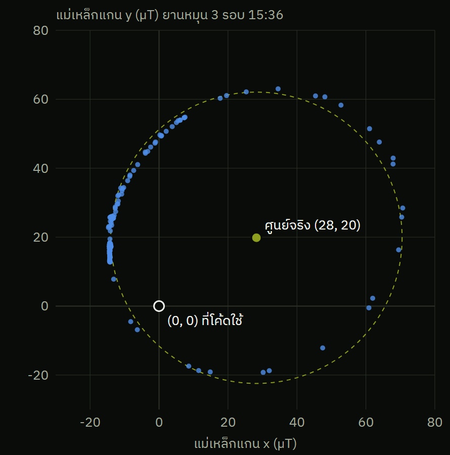

ที่เจอในโค้ดผู้จัด
เข็มทิศเบี้ยวได้ถึง 55° เพราะค่าที่ calibrate ไม่เคยถูกใช้
คาดไว้สั่ง MAG_CAL หมุนยาน 1 รอบ แล้วเข็มทิศจะตรง
เจอจริงคำสั่งแค่รายงานค่า แล้วให้ไปแก้โค้ดเอง ค่าในโค้ดเป็น 0 ตลอด

ยานหมุน 3 รอบ (15:36) ค่าแม่เหล็กควรวนรอบ (0, 0) แต่วนรอบ (28, 20) µT ห่างศูนย์ 34 µT โค้ดจึงคิดมุมผิดได้ถึง 55°
ล้อหมุนหรือหยุด วงแทบไม่ขยับ (~1 µT) ชดเชยด้วยค่าคงที่ครั้งเดียวก็พอ
แก้ (team-4): MAG_CAL เอาค่ากลางไปใช้จริง เก็บด้วย TEAM_SAVE
ตัวจำลอง: คลาด 84° → 0°
7 ต.ค. บนแท่น: หมุนยานจริง 45° แต่ heading เปลี่ยนไป ~185° คลาดกว่าที่คำนวณไว้ ต้อง calibrate ใหม่ในห้องแข่ง
ข้อมูล: log ของ GS 15:36 (198 จุดตอนยานหมุน) · เส้นประ = วงกลมที่ fit ได้ รัศมี 42 µT
09